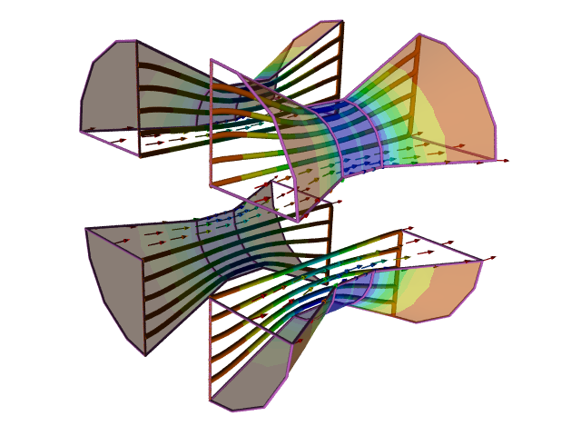

Wind Funnel to Replace CFD
Anyone well versed in aerodynamics knows that Computational Fluid Dynamics (CFD) is an indispensable analysis tool - just ask the automotive industry. However, CFD, like all analysis methods, has limitations. For example, try calculating the unsteady air flow around an entire Formula One (F1) car in less than a week. Fear not though; help may be at hand in the form of a new experimental analysis method using a Wind Funnel.
Wind Funnel: CFD simulation showing an exploded view of a Wind Funnel
Researchers at the Institute of Fluid Dynamics and Turbulence (IFDT) have recently found that funneling air around scale models of airplanes and cars in a device called a Wind Funnel (WF) can produce reasonably good agreement with CFD predictions of lift/downforce and drag.
The WF is a special shaped duct (similar to a venturi) that focuses oncoming air (much like a lens focuses light) to flow over an object. The mobile WF duct is simply placed in a windy location (similar to locating a wind turbine) and with minimal setup time it is ready to perform an air flow simulation. Using renewable wind power means that the WF is carbon neutral, in contrast to power hungry CFD simulations running on high performance computer clusters.
WF can produce results almost instantaneously once the model is configured, whereas to obtain results from a CFD calculation can take from seconds to weeks.
Professor Prandtl Reynolds, leading the IFDT research team, cites a number of challenges that still require more research before WFs can fully, if ever, replicate CFD results.
Improvements
The models currently used in the WF have smooth surfaces, free of the faceted surfaces found in CFD. To achieve better agreement with CFD results, Reynolds is investigating using rapid prototyping machines that accurately preserve the faceted surfaces used in the CFD simulation.
The WF neglects certain key CFD features such as turbulence models and artificial viscosity, but Reynolds believes that advanced real-time averaging of the WF data, combined with carefully tuned correction factors, will compensate for these discrepancies.
Reynolds doesn't have any answer yet for how to replicate general potential flow simulations. However, he does note that for smooth streamlined shapes the results from WF are usually in good agreement with computed potential flow results.
With the latest manufacturing techniques it is possible to produce scale models for the WF quicker than the time it takes to mesh a complex CFD model. WF researchers are also investigating nano-manufacturing, where objects are built molecule by molecule. See the nano-machine in action. This approach was inspired by CFD meshing principles, where a mesh is built element by element. The drawback to such an approach is that in both scenarios the process can take a long time - in the order of weeks.
The Future
While it's unlikely that the WF will ever totally replace CFD, it is clearly a promising tool for the aerodynamic arsenal in tackling the toughest air flow problems.
 End of CFD?Symscape does not hold the copyright on this picture
End of CFD?Symscape does not hold the copyright on this picture
Reynolds jokes that in the future he may consider selling carbon credits so those performing CFD simulations can offset the carbon produced in powering their high performance computer clusters.
There are already rumors that F1 teams are secretly developing WF capabilities prior to the introduction of new rules in 2009 that will limit CFD use.
Feedback
Questions? Ideas? Problems?

Recent blog posts
- CFD Simulates Distant Past
- Background on the Caedium v6.0 Release
- Long-Necked Dinosaurs Succumb To CFD
- CFD Provides Insight Into Mystery Fossils
- Wind Turbine Design According to Insects
- Runners Discover Drafting
- Wind Tunnel and CFD Reveal Best Cycling Tuck
- Active Aerodynamics on the Lamborghini Huracán Performante
- Fluidic Logic
- Stonehenge Vortex Revealed as April Fools' Day Distortion Field
 Get our Blog feed
Get our Blog feed
Comments
April Fools' Day 2008
Ok, you've probably guessed that this story is my contribution to the annual fake news April Fools' Day tradition. Remember last year when we made the front cover of Wired?
The Wind Funnel turns the arguments of the wind tunnel versus CFD on its head and was inspired by the parody "Will The Wind Tunnel Replace The Computer?"
Also within this story you'll find a link to the Rick Astley song "Never Gonna Give You Up," just for fun as part of the Rickroll phenomenon.
You can find more fake news at "April Fools' Day On The Web: 2008".